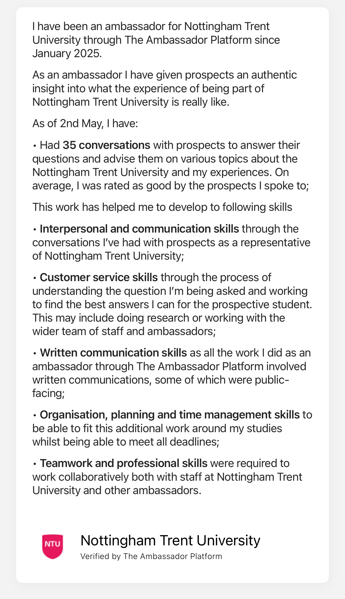

Career Aspirations
My career goal is to become a Quality Assurance (QA) Engineer, specialising in software testing and quality control. I was inspired by a workshop delivered as part of the ISYS10401 module that introduced careers in software testing and QA.
As a QA Engineer, I aim to ensure that products meet high-quality standards through automated testing, documentation, and collaboration with developers. This role aligns with my strengths in attention to detail, logical thinking, and interest in ensuring systems function correctly.
Over the next five years, I plan to complete my BSc in Computer Science, gain hands-on experience through internships or placements, and obtain industry-recognised certifications such as ISTQB Foundation Level. I have also explored alternative QA career routes such as Test Automation Engineer and Software Test Analyst via Prospects.ac.uk.
Skills Analysis
I completed the NTU Employability Self-Assessment and reflected on my current skills. Below is a summary of my strengths and development areas with supporting evidence.
| Skill | Current Level | Evidence |
|---|---|---|
| Communication | Strong | Successful group presentations in computing labs |
| Time Management | Strong | Consistently met coursework deadlines |
| Technical Skills (Testing) | Developing | Currently learning Selenium via LinkedIn Learning |
| Leadership | Emerging | Plan to lead a group project next semester |
I also analysed a job advert for a Junior QA Engineer role. The essential skills included:
- Understanding of software development lifecycle
- Familiarity with testing tools like Selenium or JUnit
- Clear written and verbal communication
- Problem-solving skills
While I meet communication and problem-solving expectations, I plan to further develop my automation testing knowledge to align fully with employer expectations.
Continuing Professional Development (CPD) Plan
This plan outlines short-term CPD activities aligned with my career aspirations in QA Engineering. All activities total over 30 hours and target key skills such as software testing, stakeholder communication, and SDLC understanding.
| Skill/Area | Development Activity | Timescale | Hours | Evidence / Measure of Success |
|---|---|---|---|---|
| QA Principles & SDLC | Attend NTU guest lectures and workshops (Professional Development module) | 3 months | 10 | Attendance Records |
| Communication in QA Teams | Reflect on experience as TAP Ambassador, focusing on stakeholder engagement and user communication | 5 months | 14 | Reference from TAP coordinators, reflective blog post |
| Software Testing Fundamentals | Completed “Foundations of Software Testing and Validation” by University of Leeds (FutureLearn) | 2 weeks | 6 | Progress Summary Screenshots |
| Game Testing Awareness | Completed "Game QA/Testing Short Course" (Udemy) | 1 day | 1 | Progress Screenshot |
| Manual QA Basics | Completed “Manual QA Engineer: Part 1” (Udemy) | 1 day | 2 | Progress Screenshot |
Total: 35 hours of relevant CPD
Evidence of Completion
Game QA/Testing Short Course (Udemy)

Manual QA Engineer: Part 1 (Udemy)


Software Testing and Validation (FutureLearn)
Reference from TAP Coordinators (NTU)

Long-Term CPD Plan
Below is my proposed long-term CPD strategy, focusing on deeper skill-building, professional certifications, and career-advancing experience relevant to QA Engineering.
| Skill/Area | Development Activity | Timescale | Planned Hours | Expected Outcome |
|---|---|---|---|---|
| Professional Certification | Prepare for and earn ISTQB Foundation Level certification | 6–12 months | 30 | Internationally recognised certification in QA |
| Real-World QA Experience | Undertake a QA-focused summer internship or placement | Next academic year | 100+ | Work-based learning, references, portfolio contributions |
| Test Automation | Complete Selenium WebDriver or Cypress course (LinkedIn or Udemy) | 3–4 months | 12 | Certificate and GitHub repo with practice projects |
| QA Tools Proficiency | Practice using tools like JIRA, TestRail, and Postman via tutorials | Ongoing | 15 | Tool familiarity, practical task demonstrations |
| QA Networking & Insight | Attend QA meetups, webinars, or conferences (e.g., TestBash) | Annually | 10 | Notes, networking, reflection blog |
Evidence of Completion
Game QA/Testing Short Course (Udemy):

Manual QA Engineer: Part 1 (Udemy):

Manual QA Engineer: Part 1 (Udemy):

Manual QA Engineer: Part 1 (Udemy):
Manual QA Engineer: Part 1 (Udemy):

Reflection on Professional Conduct
Professionalism is crucial in computing and has been emphasised throughout ISYS10401. I demonstrated professionalism by:
- Attending all sessions punctually and prepared
- Engaging respectfully in group work and peer review
- Submitting all work on time with academic integrity
I applied the BCS Code of Conduct, particularly:
- Public Interest – Respecting diversity and inclusion during group tasks
- Professional Competence – Continuously upskilling and seeking feedback
Going forward, I will deepen my professionalism by maintaining ethical judgement, clear communication, and adapting to team environments.
References
- ISTQB. (n.d.). ISTQB Foundation Level Certification. Retrieved from https://www.istqb.org
- NTU Employability Toolkit. (2025). Nottingham Trent University.
- Prospects.ac.uk. (n.d.). Software tester job profile. Retrieved from https://www.prospects.ac.uk/job-profiles/software-tester
- British Computer Society. (2023). Code of Conduct. Retrieved from https://www.bcs.org/media/2211/bcs-code-of-conduct.pdf